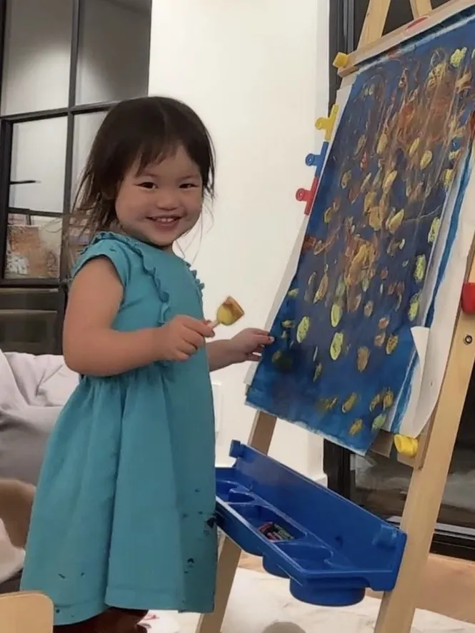

In four and a half years, our sweet Carli left a bigger impact and brought more color into the world than many do in a lifetime. Every room she walked into was made brighter by her contagious smile, generous spirit, and willingness to embrace each person that she interacted with. She is the kind of girl that could cheer you up effortlessly, simply by offering a warm hug and open welcome.
Carli was a talented painter, devoted big sister to baby Leonardo, and beloved daughter of Cindy and Peter. Her innocent and carefree existence brought healing, warmth, and calm to everyone around her, especially to her parents. She never doubted that she was loved, and that gift allowed her to touch so many people in her short time here before returning to her Heavenly home.
Carli left us suddenly on July 12, 2026. But what remains — her laughter, her healing spirit, her beautiful artwork, and the way she looked at the world — will never leave us. We gather here to remember it together.